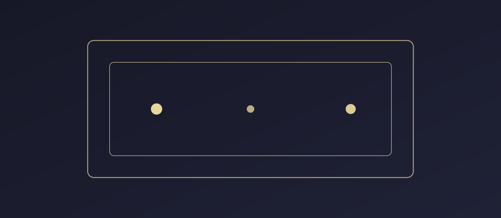

Capítulo 1
El nacimiento de la interacción
Antes de los mundos abiertos, existió una revolución más simple: la pantalla empezó a responder al jugador.
Scrollytelling interactivo
Un recorrido visual por cómo los videojuegos pasaron de reaccionar a un botón a construir mundos que parecen responder por sí mismos.
Comenzar recorridoLa historia de los videojuegos no se mide solo en polígonos o resolución. También se mide en libertad, profundidad, conexión y respuesta.
Capítulo 1
Antes de los mundos abiertos, existió una revolución más simple: la pantalla empezó a responder al jugador.
Capítulo 2
El juego dejó de ser una sola prueba estática y se convirtió en un camino por recorrer y descubrir.
Capítulo 3
La tercera dimensión cambió la forma de moverse, orientar la mirada y habitar un entorno digital.
Capítulo 4
Con la conexión en línea, jugar pasó de ser individual a convertirse en una red de competencia, cooperación y comunidad.
Capítulo 5
El jugador no solo supera retos: también crea, modifica y da forma al mundo que habita.
Capítulo 6
Los sistemas actuales reaccionan a decisiones, conectan variables y hacen que cada partida se sienta viva.
Elige el perfil que mejor describe cómo vives la experiencia de juego.
